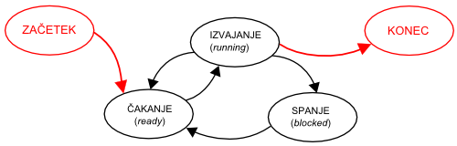

Licenca
To delo je na voljo pod pogoji slovenske licence Creative Commons 2.5:
priznanje avtorstva - nekomercialno - deljenje pod enakimi pogoji.
Celotna licenca je na voljo na spletu na naslovu http://creativecommons.org/licenses/by-nc-sa/2.5/si/. V skladu s to licenco je dovoljeno vsakemu uporabniku delo razmnoževati, distribuirati, javno priobčevati, dajati v najem in tudi predelovati, vendar samo v nekomercialne namene in ob pogoju, da navede avtorja oziroma avtorje in izdajatelja tega dela. Če uporabnik delo predela, kar pomeni, da ga spremeni, preoblikuje, prevede ali uporabi to delo v svojem delu, lahko predelavo dela ponudi na voljo le pod pogoji, ki so enaki pogojem iz te licence oziroma pod enako licenco.

Stanje procesa
Tina ima nov robotski komplet Lego Mindstorm. Končno ga ima čas sestaviti, saj staršev ni doma, mlajši brat pa se igra v svoji sobi. S spletne strani si je natisnila navodila (PROGRAM), kako naj sestavi robotka, in si jih je pripravila zraven kompleta. Pripravila si je tudi vse potrebne sestavne dele: lego palčke, kolesa, osnovne kocke, različne senzorje (VHODNI PODATKI) in začela po navodilih sestavljati robotka (PROCES). Po telefonu jo pokliče mama in naroči, da naj takoj pripravi večerjo za brata, recept pa ji je pustila na kuhinjskem pultu. Tina si označi v navodilih, kje je ostala (STANJE trenutnega procesa sestavljanja robotka), odide v kuhinjo in po maminih navodilih pripravi večerjo za brata (izvaja proces kuhanja večerje). Tina (CPE) je torej preklopila iz prvega procesa (sestavljanje robotka) na drugega z višjo prioriteto (kuhanje večerje). Smo opazili, da ima vsak proces svoj program (navodila za sestavljanje robotka in recept za večerjo). Ko Tina skuha večerjo, gre nazaj k svojemu robotku in nadaljuje točno tam, kjer je prej končala.
Kako bi izgledalo, če bi Tina hkrati sestavljala dva robotka?
Proces je torej neka aktivnost, ki ima kodo programa, vhodne podatke, izhodne podatke in stanje (do kje je procesor prišel v izvajanju programa).
Shemo, ki prikazuje stanja procesa, imenujemo tudi končni avtomat (ang. finite automaton).
 Shema stanj procesa
Med izvajanjem proces prehaja med različnimi stanji - Tina je morala prekiniti proces sestavljanja robotka, opravila proces kuhanja večerje in nato spet nadaljevala prvi proces. Proces je lahko torej v stanju:
- izvajanja (ang. running): proces za izvajanje uporablja CPE,
- čakanja (ang. ready): proces čaka, da pride na vrsto,
- spanja (ang. blocked): ni pripravljen na izvajanje, saj čaka na nek vir – podatke, na V/I naprave ali kaj tretjega, kar bomo spoznali kasneje.
Kako se stanja procesov spreminjajo v zgodbici, kjer Tina najprej sestavlja robotka, nato pa kuha večerjo.
Hitrost animacije: 5